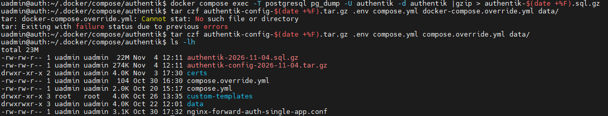
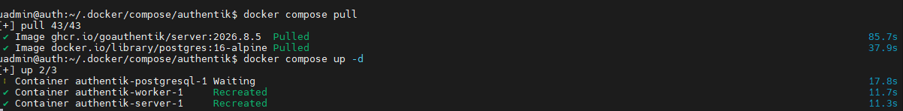
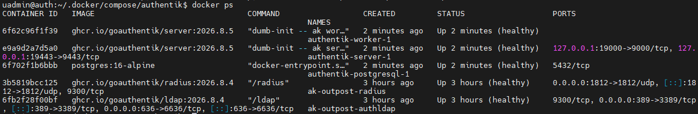

概述
authentik 升级前必须先备份数据库与配置，因为升级会带来不可逆的数据库 schema 迁移，且官方不支持降级。本文记录一次从旧版本升级到 2026.8.5 的完整流程，包括备份、升级、outpost 重建，以及异常时的回滚步骤。
一、升级前备份
进入 compose 目录：
cd ~/.docker/compose/authentik
导出数据库（service 名是 postgresql）：
docker compose exec -T postgresql \
pg_dump -U authentik -d authentik | gzip > authentik-$(date +%F).sql.gz
备份配置三件套。密钥一旦丢失，所有会话和加密数据都会报废，因此 .env 与 data/ 必须一并备份：
tar czf authentik-config-$(date +%F).tar.gz .env compose.yml compose.override.yml data/
ls -lh authentik-*.gz

建议把备份文件复制到另一台主机或对象存储，避免与 compose 目录同盘损坏。
二、执行升级
在 .env 中固定目标版本：
AUTHENTIK_TAG=2026.8.5
拉取镜像并重建：
docker compose pull
docker compose up -d
观察 server / worker 日志，确认数据库迁移完成、服务恢复正常。


三、重建 Outpost
升级后如果 outpost 版本与 server 不一致，认证会失败。删除旧容器：
docker rm -f ak-outpost-radius
然后在 authentik 管理界面的 Outposts 页面中，对应 outpost 选择「Re-create Docker container」，让系统按新版本重新生成容器。
四、回滚（升级后异常时）
由于没有降级支持，回滚顺序是「停 → 恢复库 → 固定旧 tag 启动」：
docker compose down
# 清空当前 schema 后恢复备份
docker compose up -d postgresql
docker compose exec -T postgresql psql -U authentik -d authentik \
-c 'DROP SCHEMA public CASCADE; CREATE SCHEMA public;'
# 或直接重建数据库卷后再导入
gunzip -c authentik-2026-11-04.sql.gz | \
docker compose exec -T postgresql psql -U authentik -d authentik
# 固定旧 tag 后启动
sed -i 's/^AUTHENTIK_TAG=.*/AUTHENTIK_TAG=2026.8.4/' .env
docker compose up -d
回滚前提：升级前的数据库备份完整可用。操作前请再次确认备份文件可正常解压。
五、升级后维护
如果管理界面变慢（数据库迁移会让查询计划统计过时），登录数据库跑一次 ANALYZE：
docker compose exec -T postgresql psql -U authentik -d authentik -c 'ANALYZE;'
六、升级检查清单
- [ ] 数据库与配置三件套均已备份，且备份文件已异地保存
- [ ]
.env中AUTHENTIK_TAG已改为目标版本 - [ ]
docker compose pull与up -d执行完成，日志无报错 - [ ] Outpost 容器已重建，版本与 server 一致
- [ ] 登录、SSO、MFA 等核心流程验证通过
本文由 WorkBuddy AI 编辑整理。